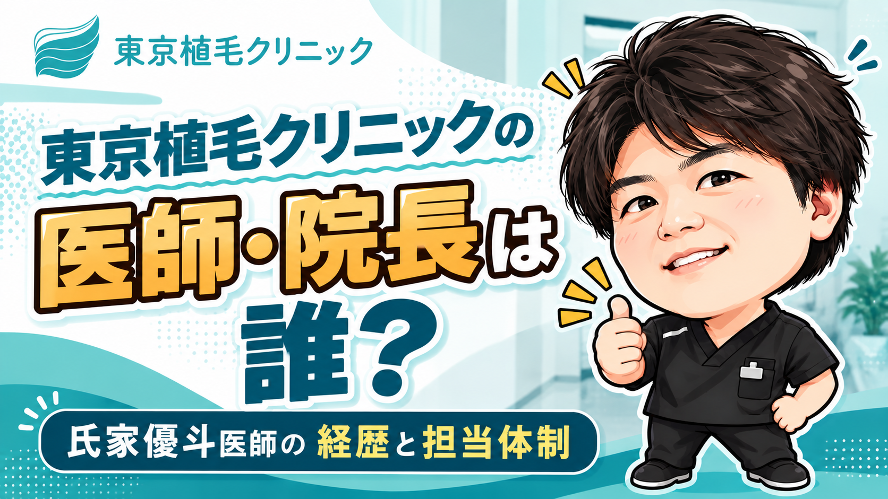

「東京植毛クリニックでは、どんな医師が診察や手術を担当するの？」と気になっている方へ。院長は氏家優斗医師です。公式サイトでは、氏家医師がカウンセリングから執刀まで担当する体制が紹介されています。
この記事では、救急科・形成外科などを経験した氏家医師の経歴、クリニックでの役割、カウンセリングから執刀までの担当体制をまとめました。
まず知っておきたい3つのポイント
- 氏家優斗医師は宮崎大学医学部卒。大学病院で救急科・形成外科を経て、育毛・AGA分野へ専門領域を広げています。
- 公式の医師紹介には、カウンセリングから執刀まで担当し、術後1年間の経過観察をチームで支える方針が掲載されています。
- 無料カウンセリングは相談だけでもOK。無理な勧誘はありません。
東京植毛クリニックの院長は氏家優斗医師
氏家優斗医師は、公式サイトの監修医紹介で「東京植毛クリニック院長」、トップページで「esteworld Japan代表医師」と紹介されています。現在は同院で植毛手術に携わる医師です。
| 氏名 | 氏家優斗 |
|---|---|
| 役職 | 東京植毛クリニック院長／esteworld Japan代表医師 |
| 出身大学 | 宮崎大学医学部卒 |
| これまでの経歴 | 大学病院で救急科・形成外科を経験し、育毛・AGA分野へ専門領域を拡大 |
| 現在の役割 | 東京植毛クリニックで植毛手術に従事。カウンセリングから執刀まで担当する旨を公式サイトで案内 |
出典：公式トップページ「代表者＆ドクター紹介」、公式コラムの監修医紹介。参照ページは記事末尾に記載しています。
氏家優斗医師の経歴｜救急科・形成外科から植毛へ
公式の経歴紹介から、氏家医師がどのような分野を経験してきたかを整理すると、次の流れになります。
- 宮崎大学医学部を卒業
医学部卒業後、大学病院で診療経験を積んでいます。 - 大学病院で救急科・形成外科を経験
公式プロフィールに、救急科と形成外科の経歴が掲載されています。 - 育毛・AGA分野へ専門領域を拡大
その後、薄毛に関わる診療分野へ進んでいます。 - 東京植毛クリニック院長として植毛手術に従事
現在は同院で診察・施術に携わっています。
救急科・形成外科の経験を経て、育毛・AGA、そして植毛に携わっていることが、氏家医師の経歴を知るうえでのポイントです。
カウンセリングから執刀まで氏家医師が担当
公式の医師紹介では、氏家医師がカウンセリングから執刀まで担当すると説明されています。
診察で希望と治療プランをすり合わせる
公式の「治療までの流れ」では、カウンセリングで悩みや要望を聞き取り、医師が頭皮・毛髪の状態を診察して施術プランを提案すると案内されています。費用やリスクについても説明を受け、内容に納得したうえで施術へ進む流れです。
生え際をどこまで下げたいか、普段どんな髪型をしているか、仕事の都合で休める期間はどのくらいかなど、生活に関わる希望も一緒に伝えてみましょう。
氏家医師のメッセージでは、医師・看護師・アシスタントなどが協力して治療に取り組み、メリット・デメリットを伝えたうえで、術後1年間の経過観察もチームで支える方針が紹介されています。
具体的には、公式料金ページで年間12回の無料経過観察が案内されています。来院だけでなくオンラインにも対応しているため、遠方に住んでいる人や通院の時間を取りにくい人も、術後の経過を相談する機会を持てます。
また、LINEや電話でも術後の不安を相談できます。公式コラムでは、自宅で撮影した頭部の写真をLINEで送り、医師や専門スタッフが経過を確認する仕組みも紹介されています。遠方などで来院が難しい場合にも、患部の写真を送り、赤みや自宅でのケアについて相談できることは、術後を過ごすうえでの心強い材料です。
年数が経過した後も、無料で検診を受けられると案内されています。公式料金ページにはこの点も明記されており、1年を区切りに相談先がなくなるわけではありません。時間がたってから気になることが出てきたときにも、相談できる体制が用意されています。
東京植毛クリニックの術後サポート
- 年間12回の無料経過観察
- 来院またはオンラインで対応
- LINE・電話で相談可能
- LINEで患部の写真を送って経過確認も可能
- 年数経過後も無料検診の案内あり
出典：公式トップページ「代表者＆ドクター紹介」、公式料金ページ「定期フォローアップ検診」、公式コラム「女性の自毛植毛に密着」の術後サポート案内（2026年9月30日確認）。参照ページは記事末尾に記載しています。
医師選びのポイントと相談したい5つの質問
医師を選ぶときは、経歴に加え、希望を話しやすいか、提案の理由が分かるかも大切です。カウンセリングでは次の5つを聞くと、自分に合った治療かを考えやすくなります。
- 自分に近い症例はありますか？
希望する部位や株数の施術経験について、症例を見ながら聞いてみましょう。 - 私には何株必要ですか？
頭皮やドナーの状態を踏まえ、提案された株数と配分の理由を教えてもらいましょう。 - 希望する生え際の形は目指せますか？
普段の髪型や希望する写真を共有し、医師とデザインをすり合わせましょう。 - 施術当日はどのように進みますか？
医師・スタッフの担当、刈り上げ範囲、術後の過ごし方を聞いておくと予定を立てやすくなります。 - 術後はどのように相談できますか？
経過観察の方法や、気になる症状が出たときの連絡先を確認しましょう。
説明を聞いたあとは、希望に合う提案だったか、費用や術後の生活までイメージできたかを振り返ってみてください。医師との相性は、実際に話してみると分かりやすくなります。
無料カウンセリングを受けるまとめ｜まず相談して自分に合うか確かめる
東京植毛クリニックの院長・氏家優斗医師は、宮崎大学医学部を卒業後、救急科・形成外科を経て育毛・AGA分野へ進み、現在は植毛手術に携わっています。公式サイトには、カウンセリングから執刀まで担当する体制と、チームで術後を支える方針が紹介されています。
氏家医師の経歴や担当体制を確認したら、次は自分の希望を伝える段階です。医師との相性や、希望するデザインが自分に合うかは、カウンセリングで実際に相談してみるのが分かりやすい方法です。
相談だけOK。無理な勧誘はありません。
参照した公式情報
確認日：2026年9月30日。経歴・担当体制・相談内容は、以下の公式掲載情報をもとに整理しています。
- トップページ「代表者＆ドクター紹介」「治療までの流れ」
https://tokyo-shokumou.jp/ - 公式コラム「林社長が2回目の植毛を決意」の監修医プロフィール
https://tokyo-shokumou.jp/column/clinic-visit-dhi/ - 公式症例「自毛植毛例 詳細2」「自毛植毛例 詳細3」
https://tokyo-shokumou.jp/case/54/
https://tokyo-shokumou.jp/case/67/ - 料金ページ「その他サービス一覧」
https://tokyo-shokumou.jp/price/ - 公式コラム「女性の自毛植毛に密着」の「ダウンタイム中のサポート体制」
https://tokyo-shokumou.jp/column/women-hair-transplant/